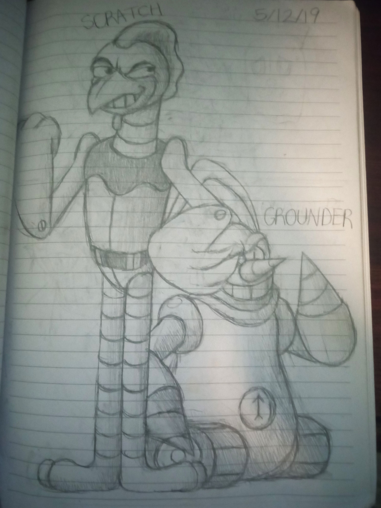
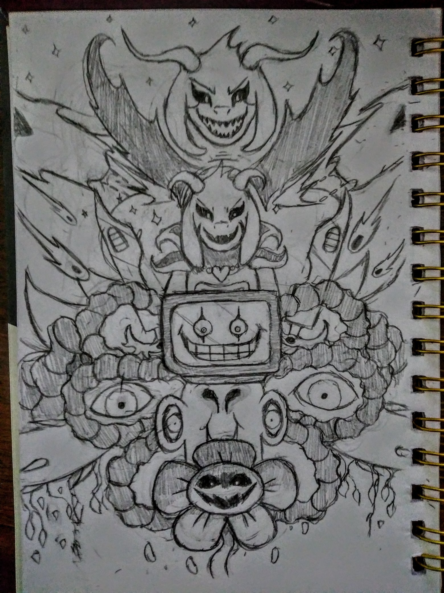
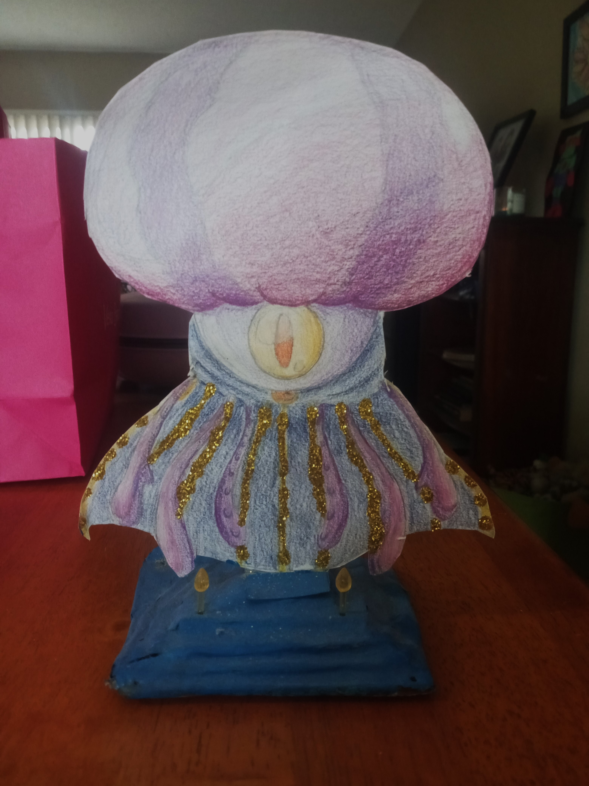
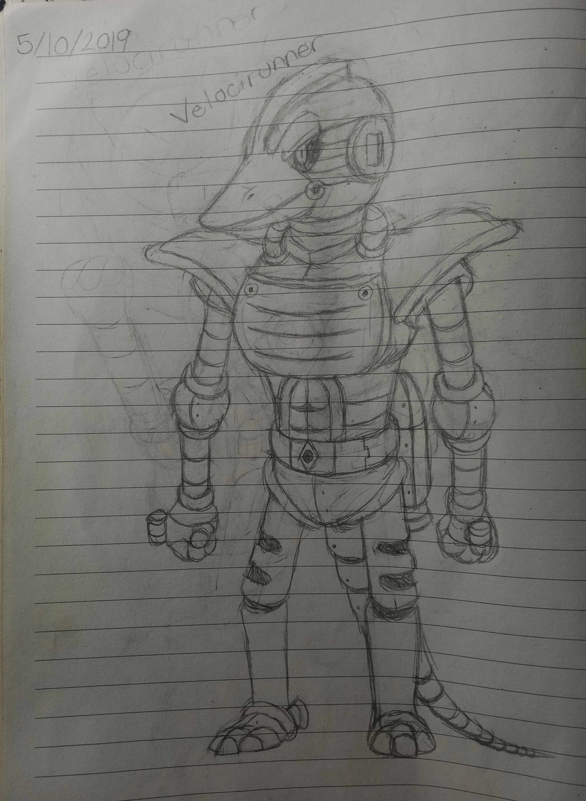
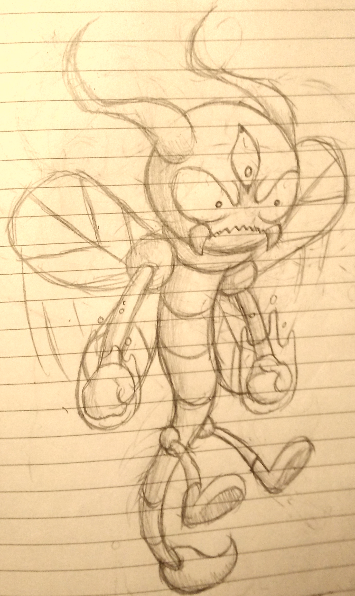
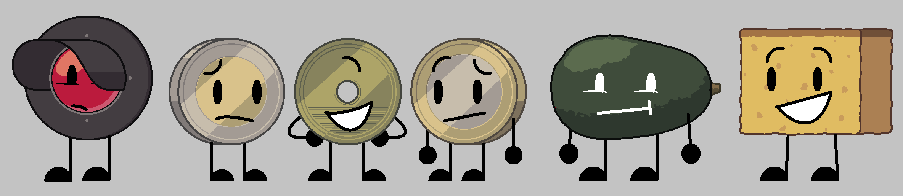
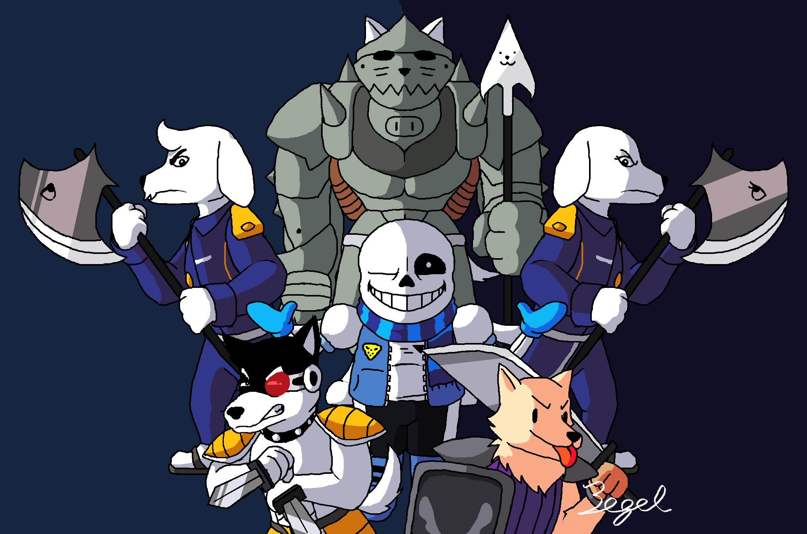
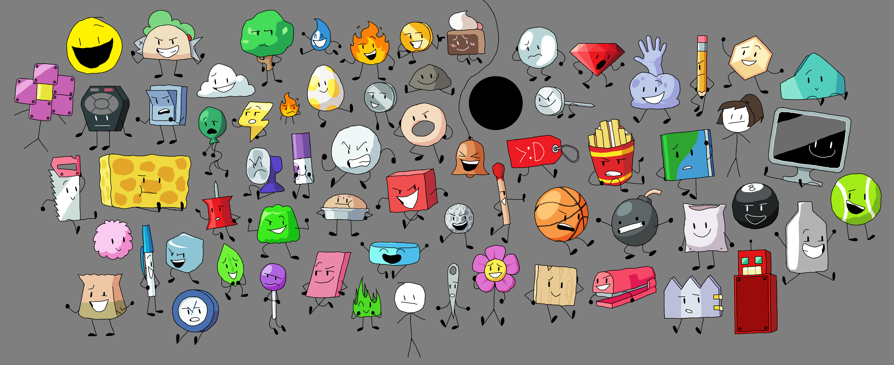
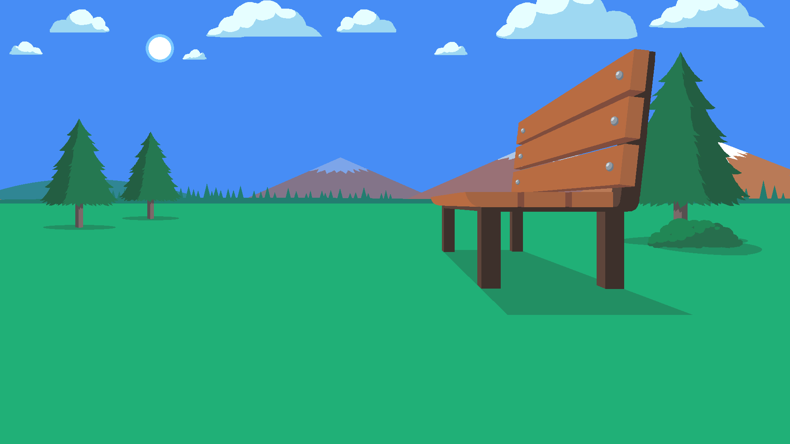
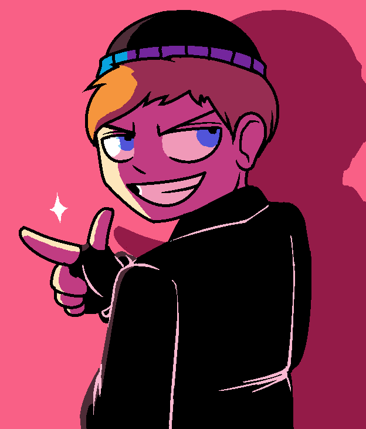

You can find them on my YouTube channel here!

Much of my traditional art is drawings, but I also used other media for art projects at school, such as the jellyfish standee below.     
I make most of my digital art in MS Paint, but I also used Photoshop for a few for alignment, such as the first image and the background landscape below.     
You can find them on my YouTube channel here!